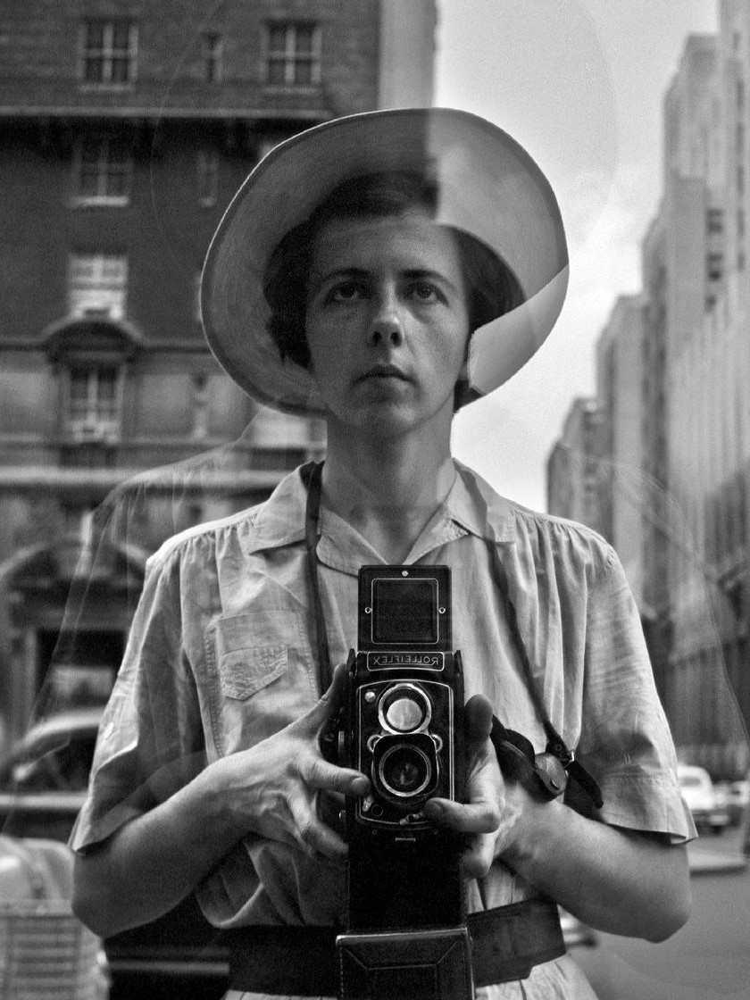

薇薇安·迈尔
薇薇安·迈尔（Vivian Maier），1926年2月1日出生于美国纽约，美国业余街头摄影师、家庭保姆。
薇薇安是法国人后裔，出生在纽约，但在法国长大，后回到美国先后生活在纽约和芝加哥，她一生拍摄了超过10万张照片。2007年，芝加哥当地历史学家约翰·马鲁夫发现了她的大量底片并开始整理，此后她的作品登上美国以至意大利、阿根廷和英国等地的报纸。2009年4月21日病逝于芝加哥。2010年，薇薇安的作品开始在芝加哥进行展出，成为摄影圈中热议的人物，并被认可为美国当代最重要的街头摄影师之一。
|

|